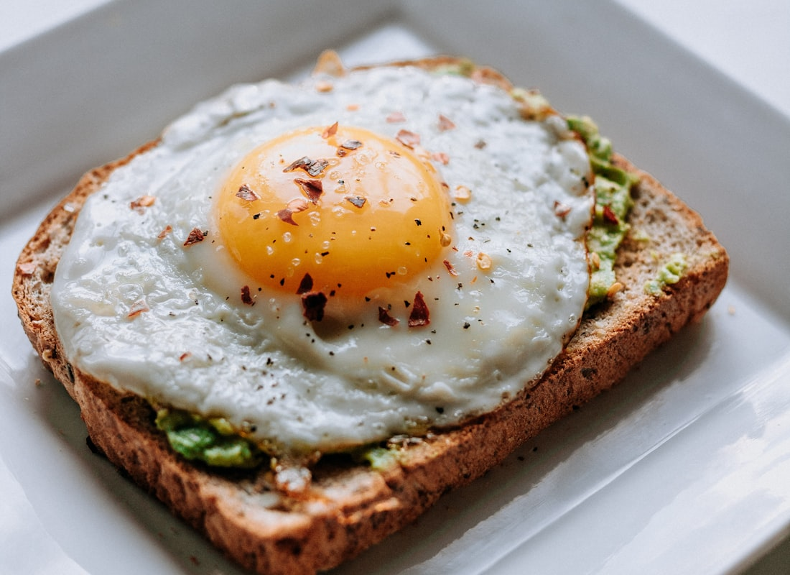
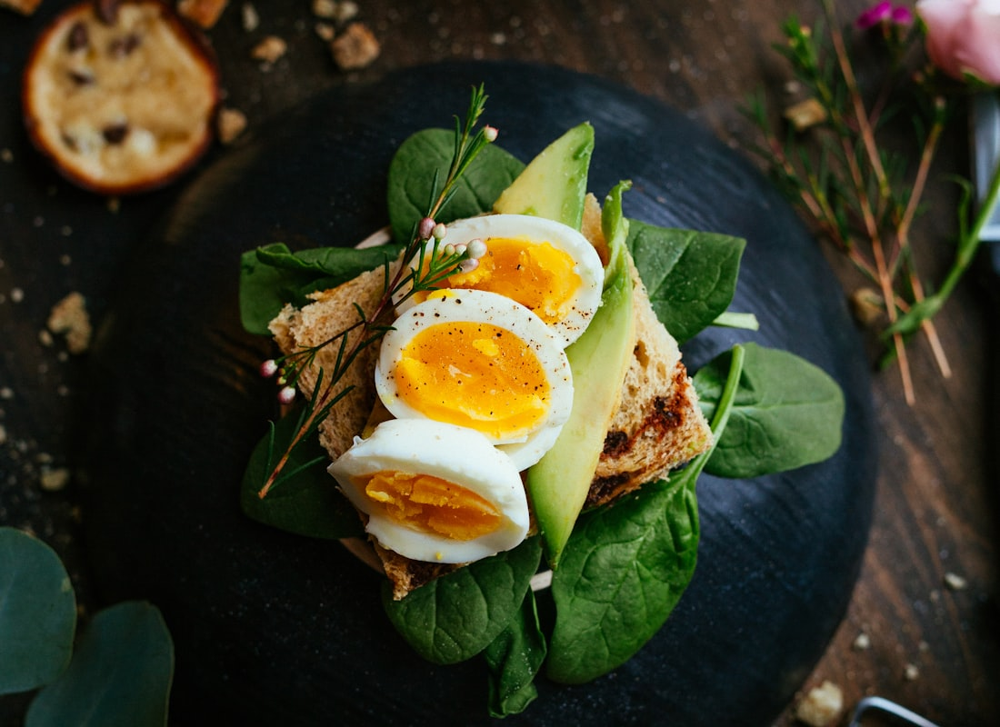

Recipe
Egg, sweet potato & veg bake
Savory breakfast. Eggs, sweet potato, pepper, spinach. Not oatmeal.
6 squares (Mon–Wed breakfast × 2)
15 min prep · 30 min oven
3–4 days fridge



Swipe for more photos.
Ingredients
- 10 large eggs
- ¼ cup 1% milk or unsweetened almond milk
- 2 medium sweet potatoes (~1½ lb), ½-inch cubes
- 1 red bell pepper, diced
- 1 small onion, diced
- 2 cups baby spinach, chopped
- 2 tablespoons olive oil, divided
- 2 garlic cloves, minced
- 1 teaspoon smoked paprika (sweet, not hot)
- ½ teaspoon black pepper
- Pinch of salt
- Optional: parsley or chives
- Optional: 2 oz feta — skip if you want zero cheese this week
Steps
- Heat oven to 400°F. Toss sweet potato with 1 tablespoon oil, pepper, pinch of salt. Spread on a sheet pan. Roast 15 minutes.
- Meanwhile whisk eggs, milk, garlic, paprika, pepper.
- Pull the pan. Push potatoes to the side. Add pepper + onion with the remaining oil. Roast 8 more minutes.
- Scatter spinach over the hot veg so it wilts. Pour eggs evenly. Shake the pan once.
- Bake 12–15 minutes until the center is just set. Rest 5 minutes. Cut into 6 squares.
- Fridge in 6 containers. Reheat 45–60 seconds so it doesn’t turn to rubber.
Why it fits the week
Protein in the morning without pastry. Sweet potato is the carb. Veg in the same pan.